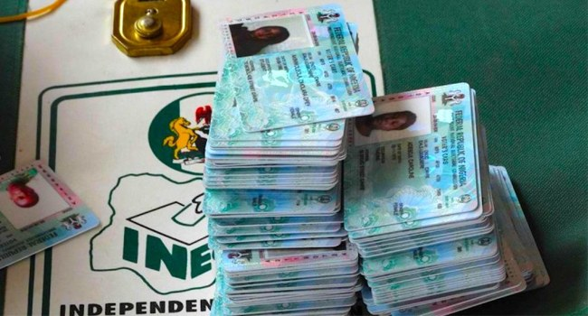

Reps Call For INEC Briefing On 2027 Election Readiness

The House of Representatives has resolved that Independent National Electoral Commission (INEC) Chairman Joash Amupitan brief the House Committee on Electoral Matters within the next seven legislative days. The briefing is to address the Commission’s readiness for the 2027 General Elections and its broader preparations for national elections.
Amupitan is expected to update the committee on Continuous Voter Registration and the management of permanent voter cards. Other subjects include election logistics, technology deployment, personnel training, electoral security, risk assessment strategies and budget implementation.
The resolution followed a motion sponsored by the House minority whip and deputy minority leader. The motion initially called for the INEC chairman to brief the full House. The deputy speaker said the Commission had already discussed its preparations publicly at several fora and proposed that the briefing instead take place at committee level. The House adopted that approach.
INEC has also revised the timetable for the general election. It had previously set 20 February 2027 for the Presidential and National Assembly Elections and 6 March 2027 for the Governorship and State Houses of Assembly Elections. The Commission said it adjusted the schedule after the Electoral Act, 2022 was repealed and the Electoral Act, 2026 enacted, changing statutory timelines for pre-election and electoral activities. Under the revised timetable, the presidential and National Assembly polls will take place on 16 January 2027, followed by the governorship and state assembly elections on 6 February 2027.
Source: Channels TV